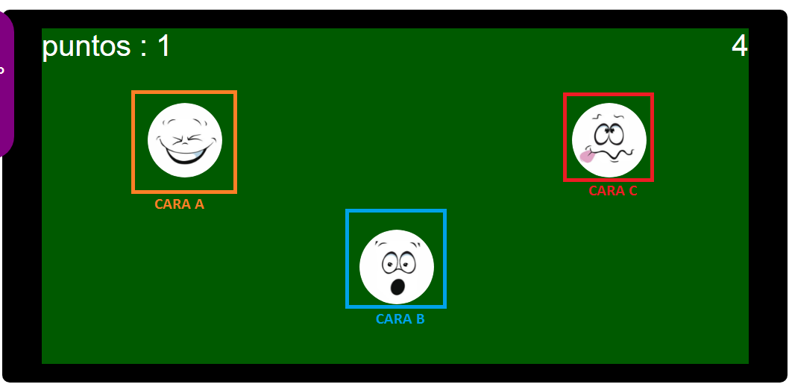

La plataforma de juego presenta básicamente tres secciones. En la parte superior de la plataforma del juego se presentan los puntos y los tiempos. En la parte superior izquierdo, se presenta un mensaje de Listos YA, este mensaje desaparecerá al primer evento que se desencadene. En la parte superior derecho se presenta el tiempo que le queda al jugador para seguir acumulando puntos, si el tiempo llega a cero, el juego termina. En toda la parte central de la plataforma se presenta el espacio en donde las caras se despliegan.

El usuario podrá actuar dando clicks en cada uno de las caras que se presenta, de esta manera, se estará realizando un evento.
Las caras que dispone el juego, son tres:
CARA A: Acumula puntos.
CARA B:Aumenta tiempo.
CARA C:Quita puntos.